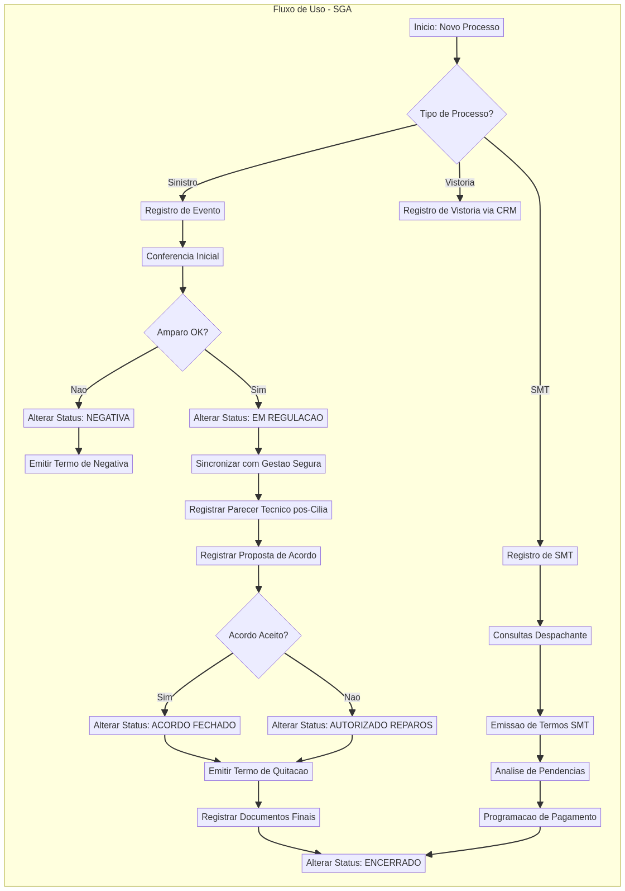

Ferramentas e plataformas que suportam as operações do departamento.
Sistema Principal de Gestão
Sistema central para gestão completa de processos, registro de pareceres, emissão de termos e controle de documentação.
Registro de Processos
Emissão de Termos
Controle Documental
Histórico Completo
Análise Técnica e Orçamentos
Plataforma para análise técnica de danos, consulta de peças, cadastro de pareceres e gestão de orçamentos.
Fluxo de Orçamentos
Consulta de Peças
Parecer Técnico
Autorização de Reparos
Sincronização e Orçamentação
Sistema de sincronização de processos com prazo de 3 dias para orçamentação e negociação com oficinas.
Sincronização
Orçamentação
Negociação
Prazo: 3 dias
Sistema de Fotos de Vistoria
Identificação e registro fotográfico de danos iniciais realizados por associados e terceiros.
Fotos de Danos
Vistoria Inicial
Documentação Visual
Gestão de Cards e Processos
Organização de processos em cards com template "Inicial-Complemento" para acompanhamento de prazos.
Cards de Processo
Template Regulação
Acompanhamento
Comunicação Interna
Canais de comunicação entre departamentos: regulagem-supervisão, regulagem-financeiro, juridico-regulagem, regulagem-goyaz.
5 Canais Ativos
Notificações
Tratativas Sigilosas
Assinaturas Digitais
Plataforma para envio, recebimento e validação de termos com assinatura digital.
Envio de Termos
Assinatura Digital
Validação
Servidor de Documentos
Armazenamento de documentos físicos e digitais, planilhas operacionais e controle de processos.
Documentos
Planilhas Operacionais
Controle
Fluxos Operacionais dos Sistemas
Diagramas detalhados dos processos em cada sistema.
Processo completo desde a verificação inicial até a autorização de reparos no sistema SGA.

Processo de análise técnica, consulta de peças e emissão de pareceres no sistema Cilia.
Processo de sincronização, orçamentação e negociação com oficinas através do Gestão Segura.